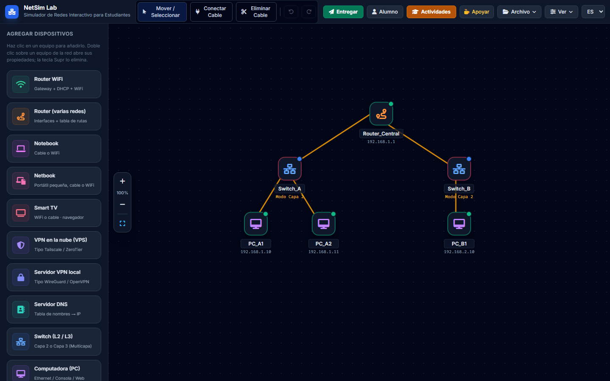
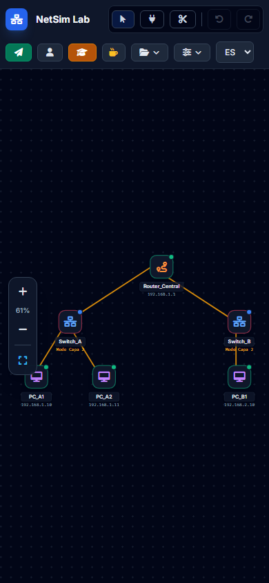

Gratuit · Sans installation · Fonctionne hors ligne
Apprendre les réseaux en créant des réseaux
SimLab Redes est un simulateur pensé pour la classe : les élèves créent des topologies, configurent les appareils et regardent les paquets voyager couche par couche, sans rien installer.
Il tourne dans le navigateur : il fonctionne aussi depuis un dossier ou une clé USB, sans serveur.

Ce qu’il contient
Tout ce qu’il faut pour une séquence sur les réseaux, sans licence ni compte.
-
Topologies dans le navigateur
Routeurs WiFi et L3, commutateurs, PC, portables, serveurs Web et DNS, et VPN. Les câbles se posent et se coupent à la souris.
-
Trafic réel simulé
ARP, ICMP, DHCP, DNS, HTTP et tunnels VPN avec animation des paquets et le détail de chaque couche OSI.
-
Tables et consoles
Tables ARP, MAC, DNS et de routage qui se mettent à jour seules, et une console par appareil pour pratiquer les commandes.
-
Prêt pour la classe
Activités avec pannes à résoudre, rendu du travail avec le nom de l’élève et correction pour l’enseignant.
À quoi ça ressemble
Captures du simulateur réel, sur ordinateur et sur téléphone.

Pour les enseignants
Le simulateur contient déjà de quoi faire cours dès demain.
Activités avec pannes
Des scénarios avec une erreur de configuration que l’élève doit diagnostiquer et corriger.
Rendu et correction
L’élève enregistre son réseau avec son nom et vous l’ouvrez depuis « Corriger les rendus ».
Projeter en classe
Mode plein écran avec grands textes et fort contraste pour le vidéoprojecteur.
Une séance de 45 minutes
- Ouvrez un exemple ou une activité et projetez-le pendant que vous expliquez la topologie.
- Les élèves la reconstruisent sur leur poste et testent au ping jusqu’à ce qu’elle réponde.
- Chacun enregistre le réseau avec son nom et vous l’ouvrez dans « Corriger les rendus ».
Quatre exercices pour commencer
- Changer le réseau d’un PC pour qu’il fasse un ping de l’autre côté du routeur.
- Réparer un serveur DHCP qui ne distribue pas d’adresses et vérifier avec ipconfig.
- Séparer deux groupes d’appareils en VLAN et vérifier qu’ils ne se voient pas.
- Publier un serveur web derrière le routeur et l’atteindre depuis Internet.
Commencer en une minute
Sans inscription, sans installation et sans dépendre de la connexion de la salle.
-
1
Ouvrez le simulateur
Il s’ouvre dans le navigateur, c’est tout : ni compte ni téléchargement.
-
2
Chargez un exemple
Le menu Fichier propose des réseaux d’exemple pour voir l’outil en action.
-
3
Enregistrez votre travail
Enregistrement en .json, export en PNG, JPG et PDF, et copie à utiliser hors ligne.
Code ouvert
Le projet est sous MIT : utilisez-le en classe, modifiez-le et partagez-le.